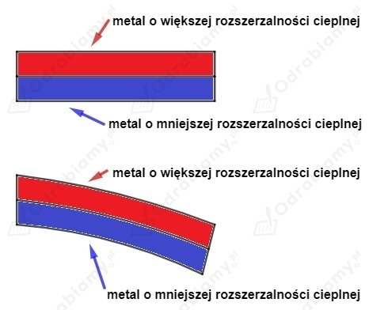

Przewody linii energetycznej są wykonane z metalu, który ulega rozszerzalności cieplnej pod wpływem zmiany temperatury.
Im wyższa temperatura przewodu, tym przewód bardziej się wydłuży. Stąd w lecie długość przewodu będzie większa niż w zimie. Kiedy przewód będzie miał większą długość będzie on zwisał niżej nad ziemią.
Zatem minimalna wysokość h przewodu linii energetycznej nad ziemią jest większa w zimie.
W czasie jazdy opony samochodów bardzo się rozgrzewają w wyniku tarcia o powierzchnię jezdni. Nagrzane opony oddają część ciepła do gazu je wypełniającego. Gaz zwiększa swoją temperaturę i w wyniku rozszerzalności cieplnej próbuje zwiększyć swoją objętość. Nie jest to jednak możliwe, ponieważ opona ulega stosunkowo niewielkiej zmianie objętości. Zwiększona siła parcia gazu na oponę powoduje wzrost ciśnienia w oponie.
Szkło jest słabym przewodnikiem ciepła. Oznacza to, że ciepło nie będzie efektywnie przekazywane w szkle, kiedy pomiędzy różnymi punktami szklanki wystąpi pewna różnica temperatur.
Kiedy rozgrzana szklanka jest pusta oddaje ona równomiernie ciepło z jej wewnętrznej strony i zewnętrznej i szklanka ochładza się równomiernie.
Kiedy szklankę wypełnimy zimną wodą ciepło z jej wewnętrznej strony będzie odbierane efektywniej (szybciej) niż ciepło odbierane z jej zewnętrznej strony. Szkło tak jak każda substancja ulega rozszerzalności cieplnej. Na skutek ochładzania się szklanki jej wymiary liniowe będą maleć. Zmiany wymiarów szklanki będą bardzo małe, ale to wystarczy, aby doszło do silnych naprężeń w strukturze szkła. Wewnętrzna część szklanki ochłodzi się szybciej i jej wymiary ulegną większemu skróceniu niż zewnętrzna część szklanki. Jeśli taki proces zajdzie szybko to w wyniku silnych naprężeń struktura szkła zostanie rozerwana i szklanka pęknie.
Bimetal to trwałe połączenie dwóch różnych metali. Ważne, aby takie metale charakteryzowały się różną rozszerzalnością cieplną.
Bimetale zazwyczaj mają postać cienkich blaszek, gdzie powierzchnię dolną stanowi metal o mniejszej rozszerzalności cielnej, a powierzchnię górną metal o większej rozszerzalności cieplnej.
Na skutek zwiększenia się temperatury bimetalu, górna część bimetalu zwiększa swoją długość bardziej niż dolna część bimetalu. Powstaje odkształcenie bimetalu w kształcie łuku.
Na poniższym rysunku przedstawiono jak bimetal odkształca się w wyniku ogrzania.

Bimetale są stosowane m.in. jako przełączniki elektryczne. Warunkiem rozłączenia obwodu elektrycznego jest przekroczenie pewnej temperatury. Kiedy bimetal jest prosty może być częścią obwodu elektrycznego i działać jako przewodnik zamykający obwód. Kiedy temperatura bimetalu wzrośnie wystarczająco, ulegnie on wygięciu i spowoduje rozłączenie obwodu elektrycznego.
Takie temperaturowe wyłączniki elektryczne stosuje się np. w żelazkach i piekarnikach elektrycznych.
Źródła (hasło bimetal):
Zmiana długości stalowego pręta jest wprost proporcjonalna do jego długości początkowej :
Każdy fragment pręta ulega pewnemu stałemu skróceniu pod wpływem zadanej ujemnej różnicy temperatur. Im dłuższy pręt, tym więcej tych fragmentów pręta, które ulegają zmianie długości.
Zatem dwa razy dłuższy pręt ulegnie dwa razy większemu skróceniu.
Jeżeli pręt o długości 1 m zmniejszył swoją długość o 0,4 mm, to pręt o długości 2 m zmniejszy swoją długość o 0,8 mm.
W butelce znajduje się pewna objętość powietrza. Kiedy butelka znajduje się w zamrażalce, powietrze w niej zamknięte ochładza się i zmniejsza swoją objętość, co skutkuje zapadnięcie się butelki pod siłą ciśnienia zewnętrznego.
Jeżeli butelkę będziemy ogrzewać w ciepłej wodzie, to powietrze w niej zawarte zwiększy swoją temperaturę i objętość, co spowoduje ponowne rozepchanie butelki.
Zjawisko to ilustruje rozszerzalność cieplną objętościową powietrza.